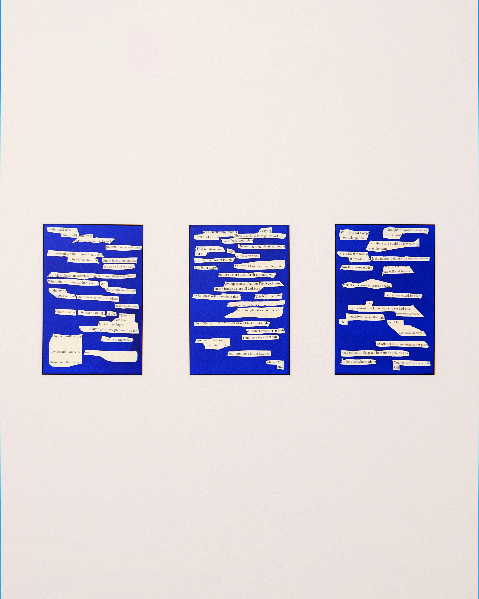
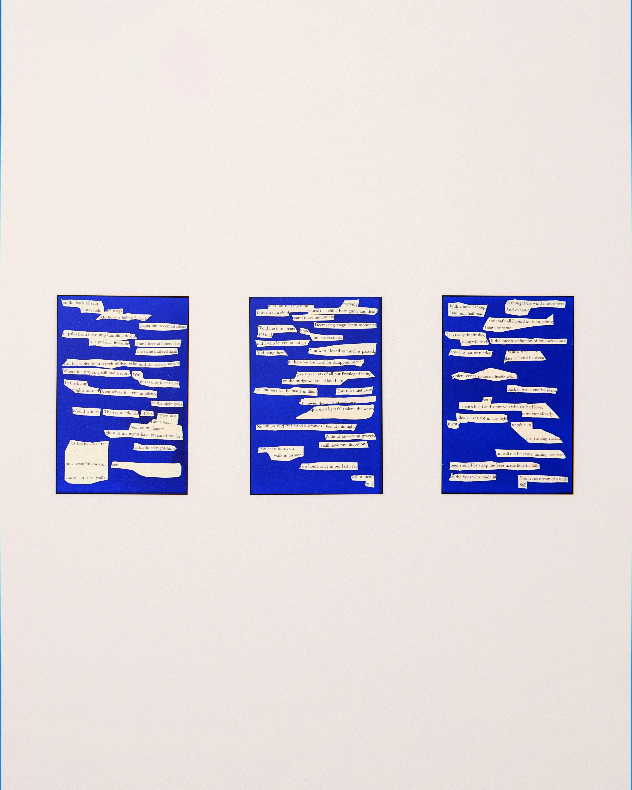

-
- ../2024/from logic to entropy, and some poems
- sculpture
Critical Craft Collective
- This is an exercise of meaning-making through the amalgamation of two identical books written by the artist. One shall assume the role of the donor, and the other a vessel of new meanings. The donor text was originally an asemic epic poem, it hoped for subjective meaning and significance to be made through the involuntary, mental word selection of the reader with no predetermined idea. This act of mental weaving is now performed physically by the author, to produce a new body of work. The donor text will be cut-up in tedium, hoping to form new narratives, words, and syntactic structures.
 
